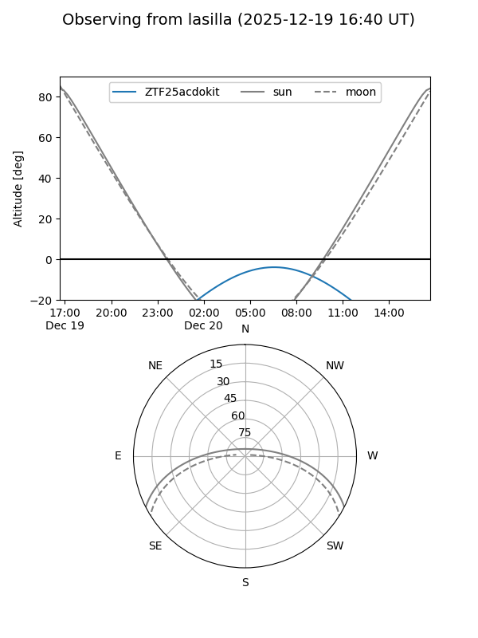
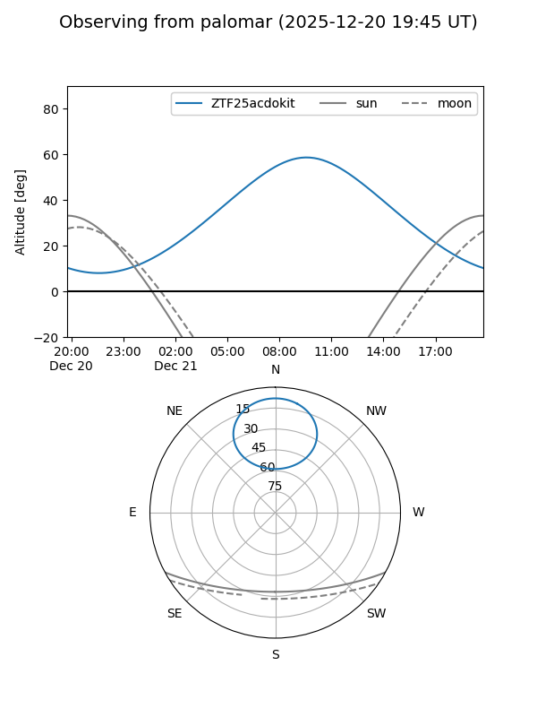
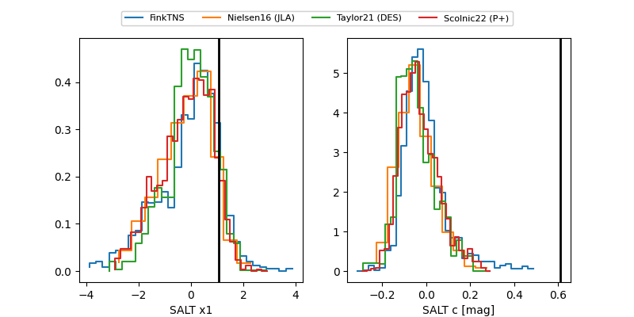

ZTF25acdokit
Target ZTF25acdokit at 2025-12-19 08:39
Aliases and brokers:
FINK: fink-portal.org/ZTF25acdokit
Lasair: lasair-ztf.lsst.ac.uk/objects/ZTF25acdokit
ALeRCE: alerce.online/object/ZTF25acdokit
alt names
ZTF25acdokit (ztf,fink_ztf)
Coordinates:
equatorial (ra, dec) = 116.0795,+64.72149
equatorial (HMS+DMS) = 07:44:19.08,+64:43:17.36
galactic (l, b) = (151.6021,+29.94921)
Flags:
Photometry:
last ztfg=19.82, ztfr=19.49
1 ztfg, 3 ztfr detections
Lightcurve

Visibility


Additional plots
